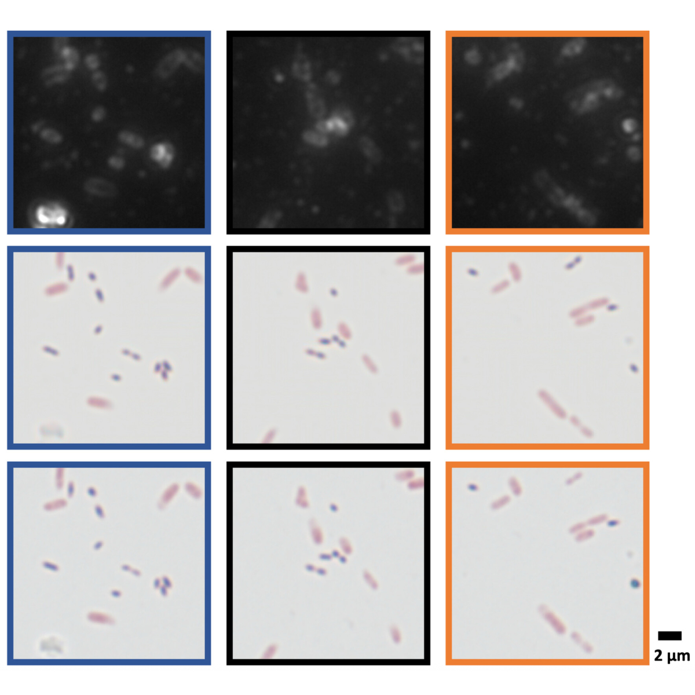

|
Cagatay Isil I am a Postdoctoral Researcher at Stanford University. My research focuses on machine learning for computational microscopy and pathology. I have a Ph.D. in Electrical and Computer Engineering from UCLA, advised by Aydogan Ozcan. I received my M.S. degree in Electrical and Electronics Engineering from Middle East Technical University, where I also completed my B.S. in both Electrical and Electronics Engineering and Physics. |
{kind=link}
ResearchI'm interested in computer vision, deep learning, generative AI, image processing, and computational imaging. |
|  |
Virtual Gram staining of label-free bacteria using dark-field microscopy and deep learning
Cagatay Isil, Hatice Ceylan Koydemir, Merve Eryilmaz, Kevin de Haan, Nir Pillar, Koray Mentesoglu, Aras Firat Unal, Yair Rivenson, Sukantha Chandrasekaran, Omai B. Garner, Aydogan Ozcan Science Advances, 2025 arXiv / code We introduce virtual Gram staining of label-free bacteria using a trained neural network (cGAN) that digitally transforms dark-field images of unstained bacteria into their Gram-stained equivalents matching bright-field image contrast. |

|
Neural network-based processing and reconstruction of compromised biophotonic image data
Michael John Fanous, Paloma Casteleiro Costa, Cagatay Isil, Luzhe Huang, Aydogan Ozcan Light: Science & Applications, 2024 arXiv This survey explores how researchers intentionally degrade various measurement aspects, such as point spread function (PSF) and signal-to-noise ratio (SNR), of biophotonic setups to then use deep neural networks to recover them. This process also serves to enhance other crucial parameters like field of view (FOV) and depth of field (DOF). |

|
All-optical image denoising using a diffractive visual processor
Cagatay Isil, Tianyi Gan, Fazil Onuralp Ardic, Koray Mentesoglu, Jagrit Digani, Huseyin Karaca, Hanlong Chen, Jingxi Li, Deniz Mengu, Mona Jarrahi, Kaan Akşit, Aydogan Ozcan Light:science & applications, 2024 arXiv / One of the top downloaded papers of Light: Science & Applications in 2024 We report an analog diffractive image denoiser designed to all-optically process noisy phase or intensity images to filter out noise at the speed of light propagation through a thin diffractive visual processor – optimized using deep learning. |

|
Subwavelength imaging using a solid-immersion diffractive optical processor
Jingtian Hu, Kun Liao, Niyazi Ulas Dinç, Carlo Gigli, Bijie Bai, Tianyi Gan, Xurong Li, Hanlong Chen, Xilin Yang, Yuhang Li, Cagatay Isil, Md Sadman Sakib Rahman, Jingxi Li, Xiaoyong Hu, Mona Jarrahi, Demetri Psaltis, Aydogan Ozcan eLight, 2024 arXiv We demonstrate subwavelength imaging of phase and amplitude objects based on all-optical diffractive encoding and decoding. |
|
Learning diffractive optical communication around arbitrary opaque occlusions
Md Sadman Sakib Rahman, Tianyi Gan, Emir Arda Deger, Çağatay Işıl, Mona Jarrahi, Aydogan Ozcan Nature Communications, 2023 arXiv We demonstrate an optical architecture for directly communicating optical information of interest around zero-transmittance occlusions using electronic encoding at the transmitter and all-optical diffractive decoding at the receiver. |
|

|
Super-resolution image display using diffractive decoders
Cagatay Isil, Deniz Mengu, Yifan Zhao, Anika Tabassum, Jingxi Li, Yi Luo, Mona Jarrahi, Aydogan Ozcan Science Advances, 2022 arXiv We report a deep learning–enabled diffractive display based on a jointly trained pair of an electronic encoder and a diffractive decoder to synthesize/project super-resolved images using low-resolution wavefront modulators. |
|
Deep iterative reconstruction for phase retrieval
Cagatay Isil, Figen S. Oktem, Aykut Koç Applied Optics, 2019 arXiv We develop a phase retrieval algorithm that utilizes two U-nets together with the model-based HIO method. |
Miscellanea |
|
Thank you Jon Barron for his website template. |